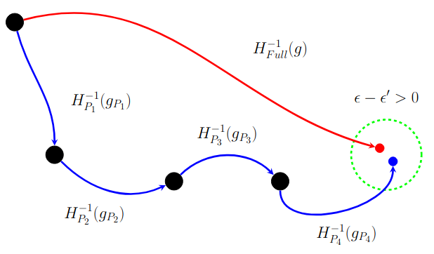

Deep Unlearning via Randomized Conditionally Independent Hessians
CVPR 2022
Ronak Mehta, Sourav Pal, Sathya Ravi, Vikas Singh
Abstract
Recent legislation has led to interest in machine unlearning, i.e., removing specific training samples from a predictive model as if they never existed in the training dataset. Unlearning may also be required due to corrupted/adversarial data or simply a user’s updated privacy requirement. For models which require no training (k-NN), simply deleting the closest original sample can be effective. But this idea is inapplicable to models which learn richer representations. Recent ideas leveraging optimization-based updates scale poorly with the model dimension d, due to inverting the Hessian of the loss function. We use a variant of a new conditional independence coefficient, L-CODEC, to identify a subset of the model parameters with the most semantic overlap on an individual sample level. Our approach completely avoids the need to invert a (possibly) huge matrix. By utilizing a Markov blanket selection common in the literature, we premise that L-CODEC is also suitable for deep unlearning, as well as other applications in vision. Compared to alternatives, L-CODEC makes approximate unlearning possible in settings that would otherwise be infeasible, including vision models used for face recognition, person re-identification and NLP models that may require unlearning data identified for exclusion.
Approximate Unlearning

Video
Reference
Code
Acknowledgements
This research was supported in part by NIH grants R01 AG040396, AG021155, EB022883 and NSF grants DMS 1265202 and CAREER award 1252725. The authors were also supported by the UW Center for Predictive Computational Phenotyping (via BD2K award AI117924) and the Wisconsin Alzheimer's Disease Research Center (AG033514). Mehta was supported by a fellowship via training grant award T32LM012413.